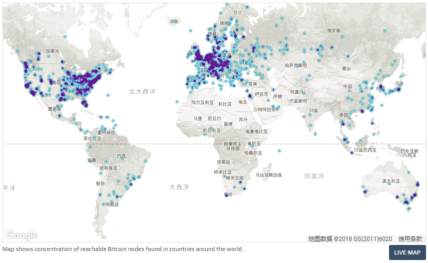

- 00 开篇词 帮你从0到1深入学习区块链技术.md.html
- 尾声篇 授人以鱼，不如授人以渔.md.html
- 新书首发《区块链第一课：深入浅出技术与应用》.md.html
- 第01讲 到底什么才是区块链？.md.html
- 第02讲 区块链到底是怎么运行的？.md.html
- 第03讲 浅说区块链共识机制.md.html
- 第04讲 区块链的应用类型.md.html
- 第05讲 如何理解数字货币？它与区块链又是什么样的关系？.md.html
- 第06讲 理解区块链之前，先上手体验一把数字货币.md.html
- 第07讲 区块链的常见误区.md.html
- 第08讲 最主流区块链项目有哪些？.md.html
- 第09讲 深入区块链技术（一）：技术基础.md.html
- 第10讲 深入区块链技术（二）：P2P网络.md.html
- 第11讲 深入区块链技术（三）：共识算法与分布式一致性算法.md.html
- 第12讲 深入区块链技术（四）：PoW共识.md.html
- 第13讲 深入区块链技术（五）：PoS共识机制.md.html
- 第14讲 深入区块链技术（六）：DPoS共识机制.md.html
- 第15讲 深入区块链技术（七）：哈希与加密算法.md.html
- 第16讲 深入区块链技术（八）： UTXO与普通账户模型.md.html
- 第17讲 去中心化与区块链交易性能.md.html
- 第18讲 智能合约与以太坊.md.html
- 第19讲 上手搭建一条自己的智能合约.md.html
- 第20讲 区块链项目详解：比特股BTS.md.html
- 第21讲 引人瞩目的区块链项目：EOS、IOTA、Cardano.md.html
- 第22讲 国内区块链项目技术一览.md.html
- 第23讲 联盟链和它的困境.md.html
- 第24讲 比特币专题（一）历史与货币.md.html
- 第25讲 比特币专题（二）：扩容之争、IFO与链上治理.md.html
- 第26讲 数字货币和数字资产.md.html
- 第27讲 弄懂数字货币交易平台（一）.md.html
- 第28讲 弄懂数字货币交易平台（二）.md.html
- 第29讲 互联网身份与区块链数字身份.md.html
- 第30讲 区块链即服务BaaS.md.html
- 第31讲 数字货币钱包服务.md.html
- 第32讲 区块链与供应链（一）.md.html
- 第33讲 区块链与供应链（二）.md.html
- 第34讲 从业区块链需要了解什么？.md.html
- 第35讲 搭建你的迷你区块链（设计篇 ）.md.html
- 第36讲 搭建你的迷你区块链（实践篇）.md.html
- 捐赠
第10讲 深入区块链技术（二）：P2P网络
在上一篇文章中，我大致讲解了一下区块链技术的几个核心要素。P2P网络协议、分布式一致性算法（共识机制）、加密签名算法、账户与存储模型。今天我们就来看看区块链技术的第一个核心要素：P2P网络。
如果我们简单来看P2P技术，它的应用领域已经非常广泛了，从流媒体到点对点通讯、从文件共享到协同处理，多种领域都有它的身影出现。
同样的，P2P的网络协议也有很多，比较常见的有BitTorrent、ED2K、Gnutella、Tor等，也就是我们常说的BT工具和电驴。
比特币、以太坊等众多数字货币都实现了属于自己的P2P网络协议，但是这种模式并不同于以上讨论的P2P网络协议，所以我们今天讨论的重点主要是区块链技术的P2P技术，也就是比特币和以太坊的P2P网络。
由于区块链的P2P网络技术知识繁多，我们主要提炼其中的四个内容进行讲解：区块链的网络连接与拓扑结构、节点发现、局域网穿透与节点交互协议。
希望读完本篇可以让你对目前成熟的区块链P2P网络的拓扑结构以及运行原理有个大体的认知。
网络连接与拓扑结构
1.网络连接
除去少数支持UDP协议的区块链项目外，绝大部分的区块链项目所使用的底层网络协议依然是TCP协议。
所以从网络协议的角度来看，区块链其实是基于TCP/IP网络协议的，这与HTTP协议、SMTP协议是处在同一层，也就是应用层。
在“区块链的常见误区”这篇文章中，我们提到了“区块链是否会颠覆互联网”这一说法，如果要是认真分析的话，它颠覆的层面其实最多只到HTTP协议，不能再多了。
以HTTP协议为代表的、与服务端的交互模式在区块链上被彻底打破了，变更为完全的点对点拓扑结构，这也是以太坊提出的Web3.0的由来。
比特币的P2P网络是一个非常复杂的结构，考虑到矿池内部的挖矿交互协议与轻节点。我们仅仅讨论全节点这种场景下的P2P网络发现与路由。
比特币的P2P网络基于TCP构建，主网默认通信端口为8333。
以太坊的P2P网络则与比特币不太相同，以太坊P2P网络是一个完全加密的网络，提供UDP和TCP两种连接方式，主网默认TCP通信端口是30303，推荐的UDP发现端口为30301。
2.拓扑结构
P2P网络拓扑结构有很多种，有些是中心化拓扑，有些是半中心化拓扑，有些是全分布式拓扑结构。
比特币全节点组成的网络是一种全分布式的拓扑结构，节点与节点之间的传输过程更接近“泛洪算法”，即：交易从某个节点产生，接着广播到临近节点，临近节点一传十十传百，直至传播到全网。

（比特币全球节点图，图来自网络）
全节点与SPV简化支付验证客户端之间的交互模式，更接近半中心化的拓扑结构，也就是SPV节点可以随机选择一个全节点进行连接，这个全节点会成为SPV节点的代理，帮助SPV节点广播交易。
节点发现
节点发现是任何区块链节点接入区块链P2P网络的第一步。这与你孤身一人去陌生地方旅游一样，如果没有地图和导航，那你只能拽附近的人问路，“拽附近的人问路”的这个动作就可以理解成节点发现。
节点发现可分为初始节点发现，和启动后节点发现。初始节点发现就是说你的全节点是刚下载的，第一次运行，什么节点数据都没有。启动后发现表示正在运行的钱包已经能跟随网络动态维护可用节点。
1.初始节点发现
在比特币网络中，初始节点发现一共有两种方式。
第一种叫做DNS-seed，又称DNS种子节点，DNS就是中心化域名查询服务，比特币的社区维护者会维护一些域名。
比如seed.bitcoin.sipa.be这个域名就是由比特币的核心开发者Sipa维护的，如果我们通过nslookup会发现大约二十多个A纪录的IPv4主机地址。
我们通过nc命令尝试连接域名下的某个主机的8333端口会发现连接成功，运行结构如下。
✘ chenhao@chenhaodeMacBook-Pro ~ nc -nvv 149.202.179.35 8333
found 0 associations
found 1 connections:
1: flags=82<CONNECTED,PREFERRED>
outif en0
src 192.168.1.104 port 62125
dst 149.202.179.35 port 8333
rank info not available
TCP aux info available
Connection to 149.202.179.35 port 8333 [tcp/*] succeeded!
好的，到目前为止我们已经手动做了一遍初始节点发现的工作，这些操作是由比特币的代码完成的。
第二种方式就是，代码中硬编码（ hard-code ）了一些地址，这些地址我们称之为种子节点（seed-node），当所有的种子节点全部失效时，全节点会尝试连接这些种子节点。
用在以太坊中，思路也大致相同，也是在代码中硬编码（hard-code）了一些种子节点做类似的工作。
2.启动后节点发现
在Bitcoin 的网络中，一个节点可以将自己维护的对等节点列表(peer list)发送给临近节点，所以在初始节点发现之后，你的节点要做的第一件事情就是向对方要列表：“快把你的节点列表给我复制一份。”
所以在每次需要发送协议消息的时候，它会花费固定的时间尝试和已存的节点列表中的节点建立链接，如果有任何一个节点在超时之前可以连接上，就不用去DNS seed 获取地址，一般来说，这种可能性很小，尤其是全节点数目非常多的情况下。
而在以太坊网络中，也会维护类似的一个节点列表(NodeTable)，但是这个节点列表与比特币的简单维护不同，它采用了P2P网络协议中一个成熟的算法，叫做Kademlia网络，简称KAD网络。
它使用了DHT来定位资源，全称Distributed Hash Table，中文名为分布式哈希表。KAD网络会维护一个路由表，用于快速定位目标节点。由于KAD网络基于UDP通信协议，所以以太坊节点的节点发现是基于UDP的，如果找到节点以后，数据交互又会切换到TCP协议上。
3.黑名单与长连接
公有区块链面临的网络环境是非常开放的，任何人只要下载好钱包，打开运行就进入了这个P2P网络，这也会带来被攻击的可能。
所以在比特币的代码中，会有一段去控制逻辑，你可以手动将你认为可疑的节点移除并加入禁止列表，同时去配置可信的节点。当然，以上并不属于客户端的标准协议的一部分，任何人都可以实现属于自己的P2P网络层。
以太坊上有针对账户进行的黑名单处理，但是这属于业务层。我没有找到很详尽的资料，所以你有兴趣的话，可以自己尝试一下。
不过总的来说，黑名单我们也可以通过操作系统的防火墙去处理，这并不算一个特别棘手的问题。
局域网穿透
前面我们说到了区块链的P2P网络结构是一种全分布式的拓扑结构。但是，如今我们的网络环境是由局域网和互联网组成的。也就是说，当你在局域网运行一个区块链节点，在公网是发现不了的，公网上的节点只能被动接受连接，并不能主动发起连接。
如果这个局域网是你可以控制的，那么很好说，咱们只需要在VPC网络中配置路由，将公网IP和端口映射到局域网中你的IP和端口即可。
这个条件是非常苛刻的，那么到底有没有一种方案可以自行建立映射呢？答案是：有，就是NAT技术和UPnP协议。
NAT技术非常常见，这里使用的是源NAT，简而言之就是替换TCP报文中的源地址并映射到内网地址。
UPnP是通用即插即用（Universal Plug and Play）的缩写，它主要用于设备的智能互联互通，所有在网络上的设备马上就能知道有新设备加入。
这些设备彼此之间能互相通信，更能直接使用或者控制它，一切都不需要人工设置。有关UPnP的资料比较多，这里就不赘述了，你可以自行搜索相关的信息。
比特币和以太坊均使用了UPnP协议作为局域网穿透工具，只要局域网中的路由设备支持NAT网关功能、支持UPnP协议，即可将你的区块链节点自动映射到公网上。
节点交互协议
一旦节点建立连接以后，节点之间的交互是遵循一些特定的命令，这些命令写在消息的头部，消息体写的则是消息内容。
命令分为两种，一种是请求命令，一种是数据交互命令。
节点连接完成要做的第一件事情叫做握手操作。这一点在比特币和以太坊上的流程是差不多的，就是相互问候一下，提供一些简要信息。
比如先交换一下版本号，看看是否兼容。只是以太坊为握手过程提供了对称加密，而比特币没有。
握手完毕之后，无论交互什么信息，都是需要保持长连接的，在比特币上有PING/PONG这两种类型的消息，这很明显就是用于保持节点之间长连接的心跳而设计的；而在以太坊的设计中，将PING/PONG协议移到了节点发现的过程中。
请求命令一般分为发起者请求，比如比特币中的 getaddr 命令是为了获取对方的可用节点列表，inv命令则提供了数据传输，消息体中会包含一个数据向量。
我们说区块链最重要的功能就是同步区块链，而同步区块恰巧是最考验P2P网络能力的。区块同步方式分为两种，第一种叫做HeaderFirst，它提供了区块头先同步，同步完成以后再从其他节点获得区块体。
第二种叫做BlockFirst，这种区块同步的方式比较简单粗暴，就是从其他节点获取区块必须是完整的。第一种方案提供了较好的交互过程，减轻了网络负担。这两种同步方式会直接体现在节点交互协议上，他们使用的命令逻辑完全不同。
总结
今天我与你分享了区块链的P2P网络结构与节点交互过程，一般P2P网络技术要解决两个主要问题，第一是资源定位，第二是资源获取，这一篇文章也是主要围绕这两点展开，其中节点发现和局域网穿透是属于资源定位问题，节点交互协议是属于资源获取问题。
在这一篇文章中，我仅以比特币和以太坊为例进行分享，虽然区块链项目比较多，但是他们要做的事情大多是类似的，比如以太坊是改进版的实现，而比特币使用了简单版实现。
P2P网络模块作为所有区块链的最底层模块，直接决定了整个区块链网络的稳定性。区块链网络是一个网状分布式的结构，与互联网结构有点相似，那么，亲爱的读者，我们是不是可以设计一个节点爬虫，去爬全网节点呢？你可以给我留言，我们一起讨论。
感谢你的收听，我们下次再见。
© 2019 - 2023 Liangliang Lee. Powered by gin and hexo-theme-book.